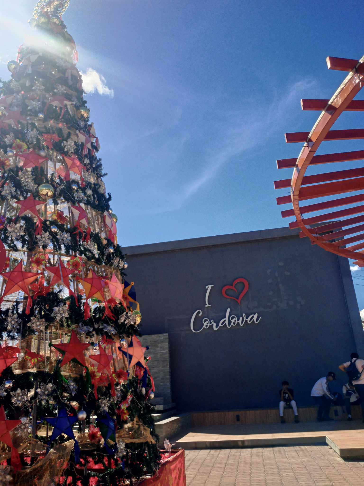
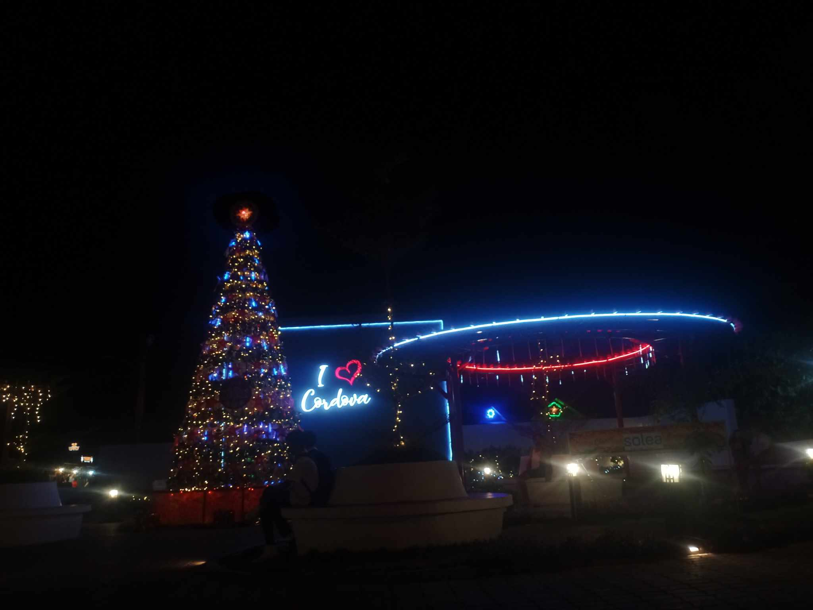
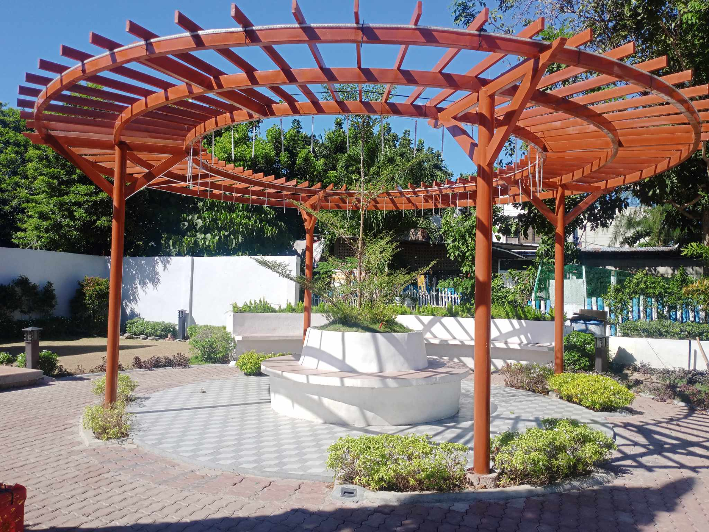
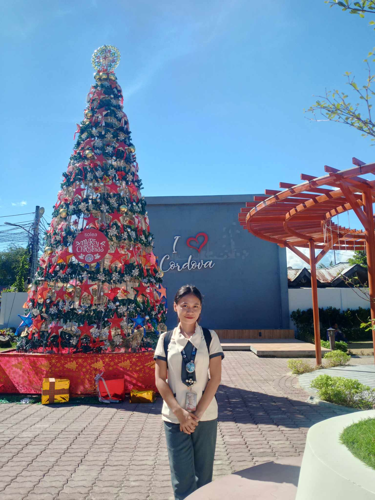

PLAZA
I 💗 Plaza
 Cordova is a municipality located in the province of Cebu in the Philippines. It is situated on Mactan Island, which is known for its beautiful beaches and vibrant marine life. Cordova is a popular tourist destination due to its proximity to the city of Cebu and its stunning natural attractions. Cordova Plaza is a public space located in the heart of Cordova town. It serves as a gathering place for locals and visitors alike. The plaza is often used for various community events, festivals, and recreational activities. It features well-maintained gardens, benches, and pathways for people to relax and enjoy the surroundings. The plaza also serves as a venue for cultural performances and live entertainment. It showcases the rich cultural heritage of the region through music, dance, and traditional performances. Visitors can experience the vibrant local culture and immerse themselves in the festive atmosphere. Additionally, Cordova Plaza provides a picturesque view of the surrounding area, including the nearby sea and mountains.
is a great spot to enjoy the sunset or take memorable photos. The plaza is easily accessible and is often frequented by both locals and tourists looking for a peaceful and scenic place to unwind. Overall, Cordova Plaza offers a pleasant and inviting environment for people to gather, relax, and appreciate the natural beauty and cultural richness of Cordova.
Comments